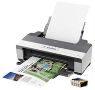

Как выбрать принтер домой.

Три основных вида принтеров - это матричные, струйные и лазерные. Разделение основано на принципах печати, которые используются в разных
принтерах. Выбирайте тот, который удовлетворяет вашим потребностям и финансовым возможностям.
Дешевым видом принтера (и уже уходящим в прошлое) считается матричный. Он весьма шумный в работе и не обладает высоким качеством печати. Эти
принтеры реже ставят дома, так как скорость печати у них невысока, хотя они и просты в эксплуатации.
Струйные принтеры. Стоят дешевле лазерных, работают быстро и тихо, а еще на них можно распечатывать фотографии. Минус таких принтеров в
использовании чернил для печати. Во-первых, чернила совершенно неустойчивы к воде. Во-вторых, печать с использованием чернил обходится дороже
за счет стоимости оригинальных картриджей. Сменные картриджи имеют маленький объем и быстро заканчиваются. Уровень чернил контролируется
благодаря прозрачности материала корпуса картриджа, и после того, как чернила закончились, их доливают через специальное отверстие. Если на
принтере долго не печатать, то картриджи могут высохнуть. Решить эту проблему может
система непреровной подачи чернил для принтера Epson.
Лазерные принтеры наиболее востребованы для использования в домашних условиях. Стоят дорого, но высокое качество печати и большая скорость
компенсируют этот минус с лихвой. Лазерные принтеры, в основном, бывают черно-белые, потому что цветные стоят очень дорого. Одного тонера
лазерного принтера хватает на несколько тысяч страниц. После того, как тонер закончится, можно либо выбросить картридж и приобрести новый,
либо заправить его еще раз. Новый картридж стоит дорого, а заправка обойдется в несколько раз дешевле. Копии влагоустойчивы после печати, в
отличии от напечатанных струйным принтером.
Принтер может быть совмещен со сканером, такие устройства
называются МФУ (многофункциональные устройства). Сканер,
как правило, располагается в верхней части корпуса и закрыва-
ется крышкой. Такие устройства очень удобны для офиса, так
как имеют функцию копирования “на лету”, для этой функции
компьютеры могут быть не подключены.
Читайте также:
Как самому заправить струйный картридж?
СНПЧ - простое переоборудование принтера.
Следующая статья:
Параметры, имеющие особое значение при покупке видеокарт.